Desarrolladas en las primeras computadoras electromecánicas y de tubos de vacío.
Aún se usan en procesadores empotrados de gama baja y son la base de la mayoría de arquitecturas modernas.
Consiste en una unidad central de proceso que se comunica a través de un solo bus con
un banco de memoria donde se almacenan los códigos de instrucción del programa y los
datos que procesará.
• Usada en la actualidad debido a su versatilidad.
• Su desventaja es que el bus de datos y direcciones único se convierte en un cuello de botella,
obligando que los accesos a esta sean secuenciales.
• Con esta arquitectura apareció el concepto de Programa Almacenado.
• El procesador se subdivide en Unidad de Control, Unidad Lógica Aritmética y Serie de Registros.

• Surge en la universidad del mismo nombre.
• El programa se almacena como un código numérico en la memoria, pero no en el mismo espacio de memoria ni en el mismo formato que los datos.
• Al tener un bus para el programa y otro para los datos, permite que se lea el código de operación de una instrucción al mismo tiempo que se lee la memoria de datos de los operados de la instrucción previa.
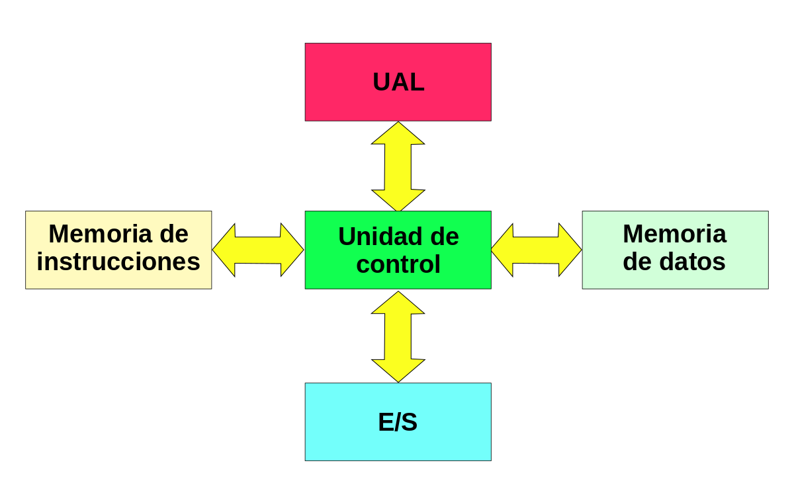
Buscan mejorar el desempeño realizando paralelamente varias etapas del ciclo de instrucción al mismo tiempo.
El procesador se divide en varias unidades funcionales independientes y se dividen entre ellas el procesamiento de las instrucciones.
• En un procesador con segmentación del cause, la etapa de búsqueda del código de instrucción y la etapa de ejecución de la misma se asignan a unidades funcionales diferentes.
• Las ventajas de este esquema se pierden cuando hay un salto en el programa y todas las instrucciones que ya se buscaron y se encuentran en la cola, deben descartarse y comenzar a buscar instrucciones desde cero a partir de la dirección a la que se saltó. Lo que reduce el desempeño del procesador.
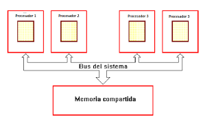
Cuando se desea incrementar el desempeño más allá de lo que permite la técnica de segmentación del cauce, se requiere utilizar más de un procesador para la ejecución del programa de aplicación.
• SISO - (Single Instruction, Single Operand) Computadoras Monoprocesador.
• SIMO - (Single Instruction, Multiple Operand) Procesadores vectoriales, Exenciones MMX.
• MISO - (Multiple Instruction, Single Operand) No implementado.
• MIMO - (Multiple Instruction, Multiple Operand) Sistemas SMP, Clusters, GPUs.
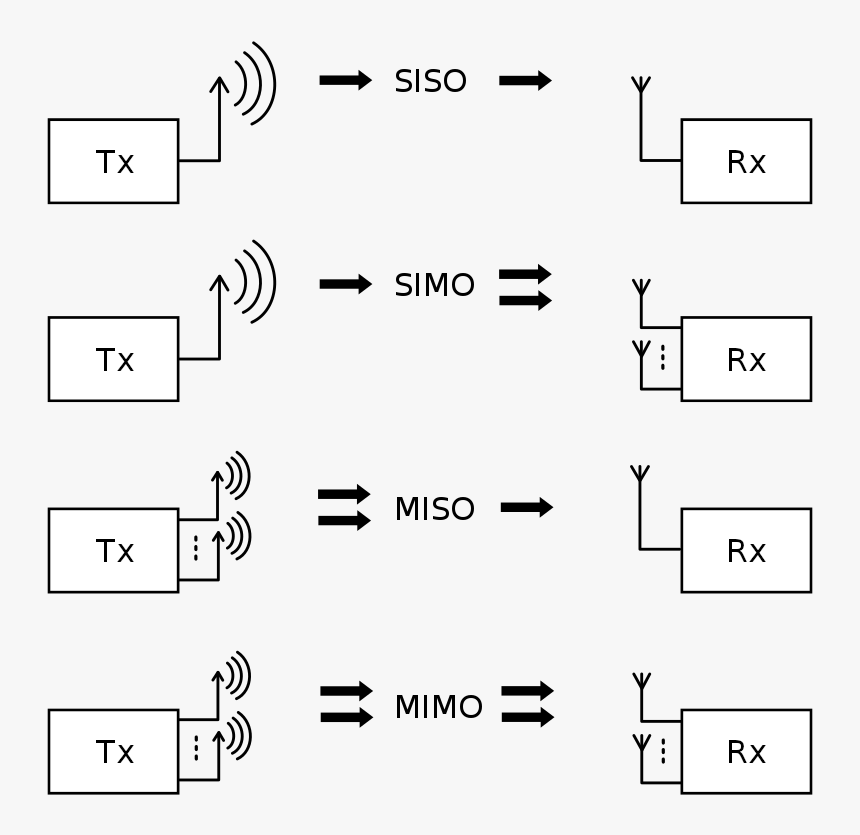
Además de las Arquitecturas Clásicas, han aparecido arquitecturas híbridas entre Von Newman y Harvard, buscando conservar la flexibilidad, pero mejorando el rendimiento.
Arquitectura de computadoras que promueve el gran uso de instrucciones, permitiendo operaciones complejas entre operandos situados en memoria o registros internos. Sus características son:
• Muchas instrucciones complejas.
• Instrucciones de longitud variable.
• Complejidad en microcódigo.
• Muchas instrucciones pueden accesar a la memoria.
• Muchos modos de direccionamiento.
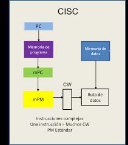
Son procesadores que están diseñados para ejecutar un número reducido de tipos de instrucciones que les permite operar a una velocidad más elevada.
• Usa instrucciones simples.
• Instrucciones de longitud fija.
• Complejidad en el compilador.
• Acceso a la memoria solo con instrucciones d¡load/store.
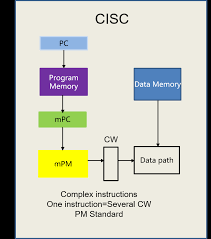
Es el cerebro de cada ordenador y se encarga de procesar todas las instrucciones del dispositivo. Cuanto más potente sea, más rápido podrá hacer las operaciones.
Es pequeño y de forma cuadrada, va instalado en la placa madre del ordenador. Su frecuencia se mide en GigaHertz y marca el ritmo con el que trabaja el procesador.
Un CPU funciona de la siguiente manera:
• Ejecuta una secuencia de instrucciones y procesa los datos de las mismas.
• Se encarga de leer datos e instrucciones para realizar cada una de las tareas (decodifica los datos y los divide).
• Las instrucciones no se realizan en orden una tras otra, el CPU trabaja con varias a la vez.
Cuenta con diversos componentes:
• Unidad de control: Gestiona el procesamiento de instrucciones.
• Registros: Ubicaciones de almacenamiento de memoria de alta velocidad dentro del CPU.
• ALU: Realiza operaciones aritméticas básicas.
• Unidad de gestión de memoria: Bus, gestionan las tareas relacionadas con la memoria, interacción de CPU y RAM.
• Reloj: Se basa en una señal para sincronizar sus operaciones internas (lo coordina).
• Núcleo: Interpreta y ejecuta acciones.
• Memoria cache: Almacena los datos que el usuario busca con frecuencia.
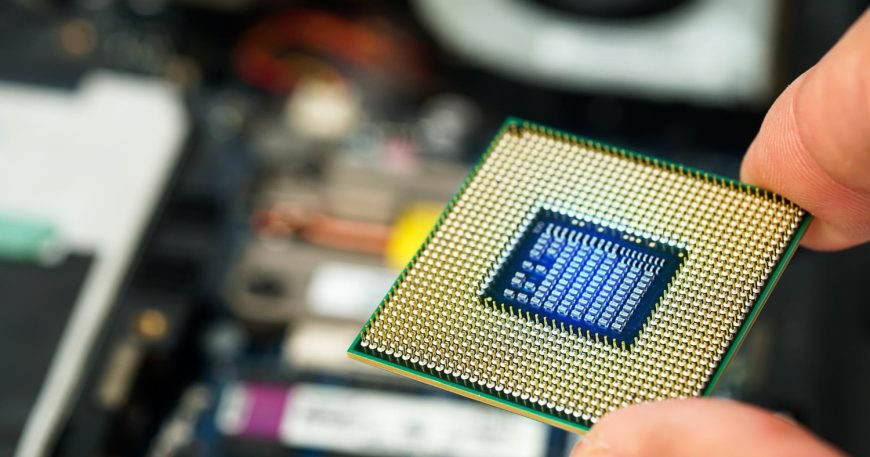
Es un circuito digital que realiza operaciones lógicas y aritméticas entre dos operados de n bits. Se localiza en el CPU y realiza operaciones con los datos que provienen de la memoria o dispositivos externos.
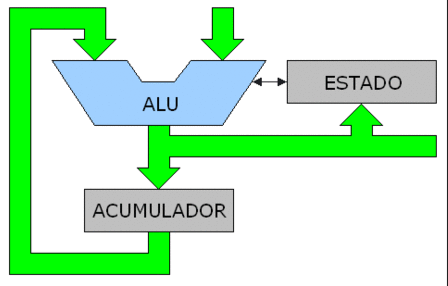
Un registro es una memoria que está ubicada en el procesador y se encuentra en el nivel más alto en la jerarquía de memoria,
por lo tanto, tiene una alta velocidad, pero con poca capacidad para almacenar datos que va desde los 4 bits hasta los 64 bits dependiendo del procesador que se utilice.
Los datos que almacena son los que se usan frecuentemente.
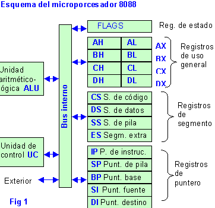
Son canales de comunicación que permiten la transferencia de datos entre diferentes componentes del sistema. Estos componentes pueden ser la CPU, la memoria, los dispositivos de almacenamiento, las tarjetas de expansión, etc.
• Bus del Sistema: Conecta la CPU con la RAM.
• Bus de Datos: Facilita la transferencia de datos entre el CPU, la memoria y otros componentes conectados al sistema.
• Bus de Direcciones: Se usa para especificar la ubicación de la memoria o de los registros en la CPU a los que se desea acceder.
• Bus de Control: Transmite señales que coordinan y regulan las operaciones dentro del sistema.
• Bus de Entrada/Salida: Conecta la CPU con dispositivos externos.
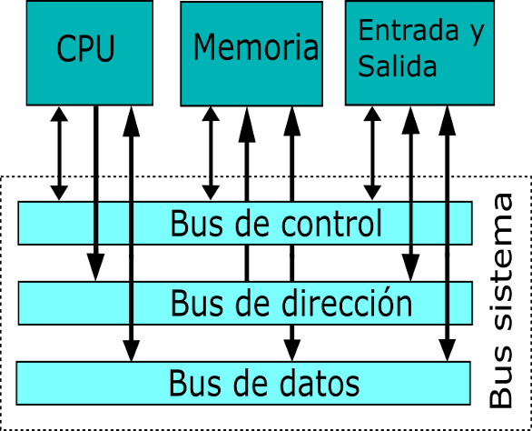
Es un dispositivo que puede mantenerse en por lo menos dos estados estables por un cierto periodo de tiempo.
En informática, la memoria es el dispositivo que retiene, memoriza o almacena datos informáticos durante algún periodo de tiempo.
• Gestión de memoria: Proceso de asignación de memoria a los programas que la solicitan.
• Sistemas de memoria virtual: Separan las direcciones de memoria utilizadas por un proceso de las direcciones físicas reales, permitiendo la separación de procesos e incrementando la cantidad efectiva de memoria de acceso aleatorio utilizando la paginación.
• Administración de memoria: Se refiere a los distintos métodos y operaciones que se encargan de obtener la máxima utilidad de la memoria, organizando los procesos y programas que se ejecutan de manera tal que se aproveche de la mejor manera posible el espacio disponible.
• Partición fija: División de la memoria libre en varias partes (de igual o distinto tamaño).
• Partición dinámica: Particiones de memoria en tamaños que pueden ser variables. Según la cantidad de memoria que necesita cada proceso.
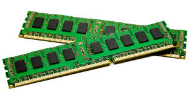
La RAM (Random Access Memory) es aquella donde se almacenan de manera temporal los datos de los programas utilizados en este momento. Se encarga de hacer las tareas de forma más inmediata y almacenar las instrucciones de la CPU o los datos que las necesitan constantemente.
Existen dos tipos de RAM:
• DDR (Double Data Rate): Son capaces de llevar a cabo dos operaciones en cada ciclo de reloj.
• SDR (Single Data Rate): Solo ejecutan una operación de lectura o escritura.

Es la memoria de acceso rápido de una computadora, que guarda temporalmente las últimas informaciones procesadas.
• Nivel 1: Se encuentra en el núcleo del procesador. Es utilizada para almacenar y acceder a datos e instrucciones importantes y de uso frecuente, agilizando los procesos al ser el nivel que ofrece un tiempo de respuesta menor (alojada en el procesador).
• Nivel 2: Se encarga de almacenar datos de uso frecuente, es mayor que la caché de Nivel 1, pero a costa de ser más lenta. Aún así es más rápida que la memoria RAM (fuera del núcleo).
• Nivel 3: Es más rápida que la RAM, pero más lenta que el Nivel 2, ayuda a que el sistema guarde gran cantidad de información agilizando las tareas del procesador (incorporada a la placa base).
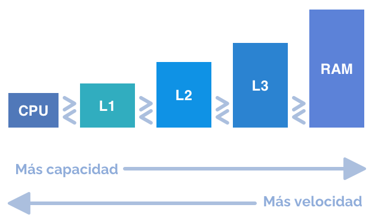
Para que una computadora se útil, debe comunicarse con el mundo exterior a través del subsistema de Entrada/Salida.
Este sistema tiene como funciones:
• Direccionamiento: Selección del dispositivo correspondiente de entre los dispositivos disponibles en el sistema.
• Sincronización: Ha de posibilitar que el CPU y la memoria se puedan comunicar con los dispositivos de E/S.
• Transferencia: El sistema E/S debe de tener toda la circuitería y señales de comunicación apropiadas.
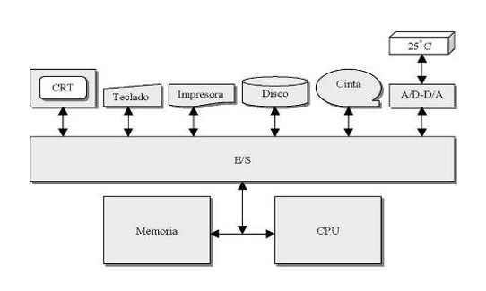
Son las interfaces que tiene la computadora con el exterior. Su objetivo es facilitar las operaciones de E/S entre los periféricos y la memoria o los registros del procesador.
Estos módulos se conectan con la CPU y memoria a través del bus del sistema. Asimismo, se conectan a los periféricos mediante conexiones de datos particularizadas.
El módulo E/S es frecuentemente responsable de realizar una detección de errores, que pueden ser avisados por el periférico o producirse por fallos de transmisión.
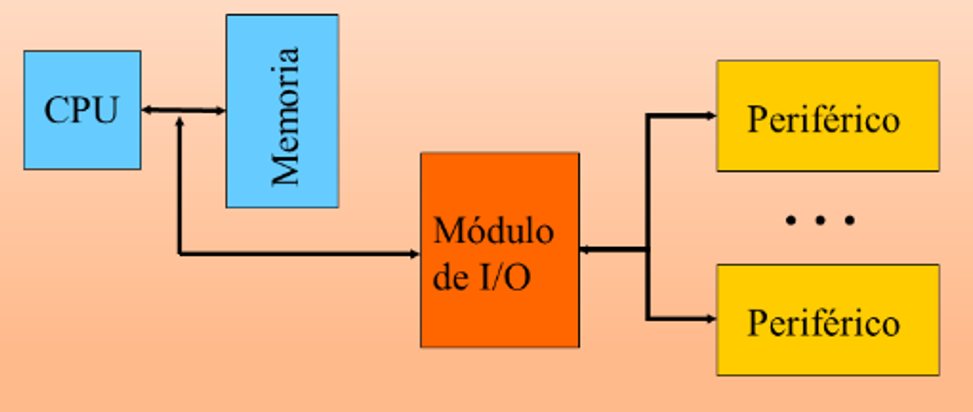
Con la E/S programable, el módulo realiza la instrucción que le encarga la CPU y coloca los bits correspondientes en el registro. Es responsabilidad de la CPU comprobar periódicamente el estado hasta que se complete la instrucción.
Para ejecutar una instrucción E/S, la CPU utiliza una dirección, que especifica el módulo particular, y un comando E/S. Los datos se leen de uno en uno.
Para cada palabra, la CPU debe permanecer en un ciclo de comprobación hasta que determina que el dato está disponible en el registro de datos del módulo.
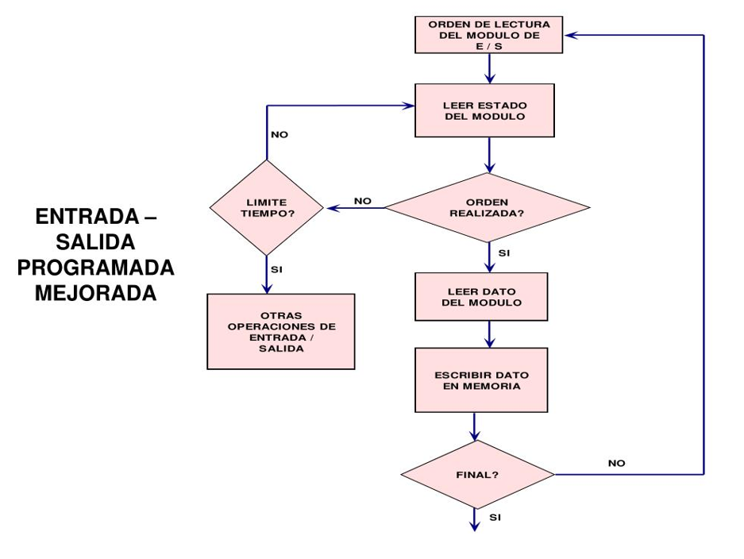
Esta técnica pretende evitar que el procesador pare o haga trabajo improductivo, mientras que espera a que el periférico esté preparado para hacer una nueva operación.
Su funcionamiento es el siguiente:
1. El procesador ejecuta instrucciones de un programa y comprueba si se ha producido una interrupción.
2. En caso afirmativo se salva el estado actual del programa y se salta a ejecutar la rutina de servicio correspondiente.
3. La rutina de servicio efectúa las operaciones apropiadas en la E/S para realizar la transferencia de datos solicitada.
4. Al finalizar la rutina de servicio se recupera el estado de la CPU y se continúa ejecutando el programa que se estaba ejecutando antes de la interrupción.
Existen dos tipos de interrupciones: Enmascarables (se pueden dejar de atender por software) y No Enmascarables (siempre atendidas).
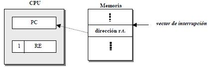
El DMA permite que el dispositivo de red mueva los datos del paquete directamente a la memoria del sistema, reduciendo la utilización del CPU.
Sin embargo, la frecuencia y los intervalos aleatorios en los cuales los paquetes llegan no permiten que el sistema ingrese un estado de energía más bajo.
La DMA es utilizada en controladores de disco, tarjetas gráficas y tarjetas de sonido. Es esencial en todo ordenador moderno, ya que permite a dispositivos de diferentes velocidades comunicarse sin someter a la CPU a una carga masiva de interrupciones.
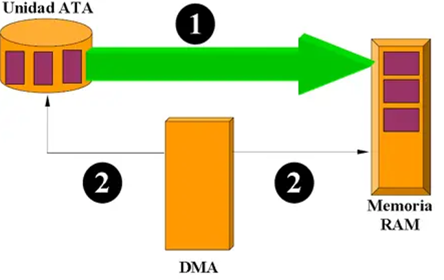
El canal de E/S es una extensión del bus del 8088. Estos canales proporcionan una línea Ready para permitir operaciones con dispositivos de memoria o de E/S lentos.
Los dispositivos de E/S están direccionados utilizando un mapeo de E/S con el espacio de direccionamiento. El canal proporciona a las tarjetas de E/S 512 direcciones de dispositivos.
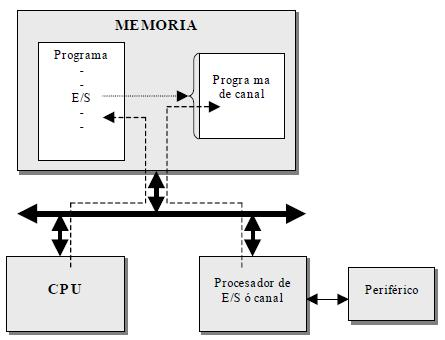
Son el conjunto de líneas de comunicación que permiten la transferencia de datos entre los componentes de la PC. Permiten que el procesador se comunique con la memoria, los dispositivos de almacenamiento, las tarjetas de expansión y otros componentes.
• Paralelo: Los datos son enviados por bytes al mismo tiempo, con la ayuda de varias líneas que tienen funciones fijas.
• En serie: La información se transmite de bit a bit, lo que implica que solo se necesita una línea de datos.
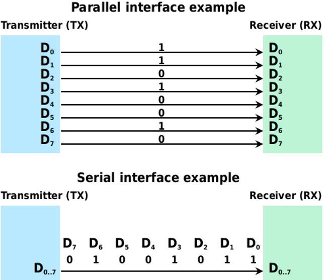
• Unidireccional: Sólo permite la transmisión en una dirección o sentido.
• Bidireccional: Permite la transmisión de datos en una dirección u otra, pero no ambas al mismo tiempo.
• Duplex Completo: Se transmiten datos en ambos sentidos o direcciones de manera simultánea.
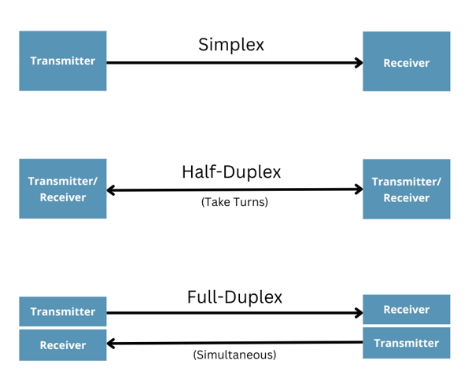
• Dirección: Se encargan de indicar el dispositivo con el que se desea establecer comunicación.
• Control: Transportan señales de estado de las operaciones efectuadas por la CPU a las demás unidades.
• Datos: Mueve los datos entre los dispositivos del hardware de entrada, de salida y de almacenamiento.
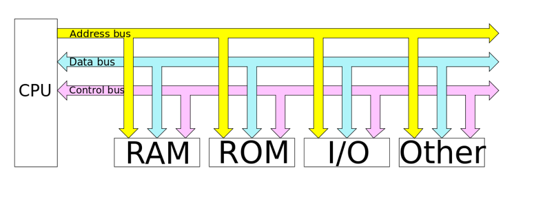
La principal función de un bus es servir de soporte para la realización de transferencias de información entre dichas unidades.
La unidad que inicia y controla la transferencia se conoce como master del bus y la unidad sobre la que se realiza la transferencia se conoce como slave.
Los papeles de master y slave son dinámicos, de manera que una misma unidad puede realizar ambas funciones en transferencias diferentes.
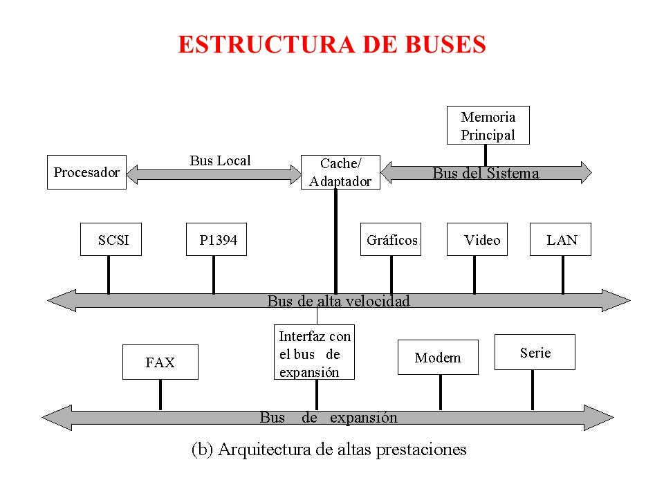
Los computadores modernos tienen por lo menos 4 buses diferentes. Se les considera una jerarquía porque cada bus se conecta al nivel superior a él dentro del computador, integrando así todas las partes del mismo.
• Interno: Mueve datos entre los componentes internos del microprocesador.
• Procesador: Es el más rápido tratándose de que este es el dispositivo más rápido del computador.
• Caché: Es un bus de alta velocidad que utiliza un procesador de computadora para comunicarse con su memoria caché.
• Local de E/S: Permite acceso rápido a los datos en caché y la conexión de dispositivos E/S.
• Estándar de E/S: Conexión más lenta a través de otro adaptador debido a las líneas eléctricas que unen las partes del microprocesador, formando el bus interno por donde circulan datos, señales de control y direcciones de memoria, que en un microprocesador de 32 bits consta de 32 lineas.
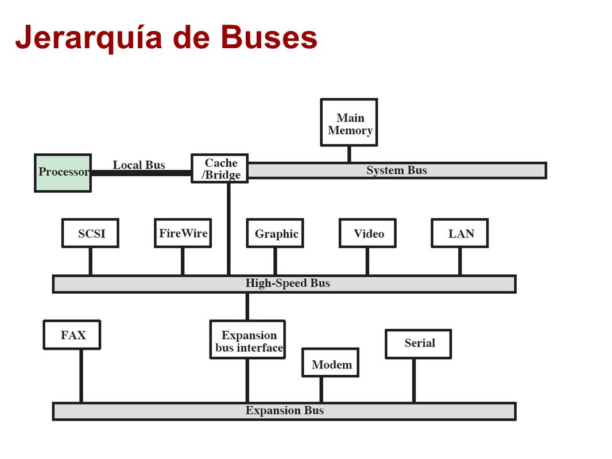
Es una forma de comunicación del software y hardware con la CPU.
Consiste en un mecanismo que le permite al hardware la invocación de una rutina fuera del control del programa que está siendo ejecutado.
Es una suspensión temporal de la ejecución de un proceso, para pasar a ejecutar una subrutina de servicio de servicio de interrupción, la cual, por lo general,
no forma parte del programa, sino que pertenece al SO o al BIOS. Una vez finalizada dicha subrutina, se reanuda la ejecución del programa.
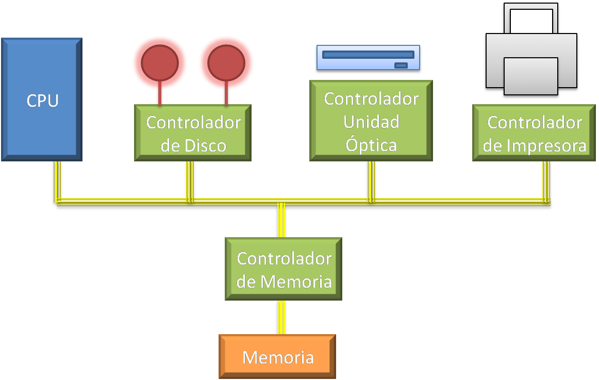